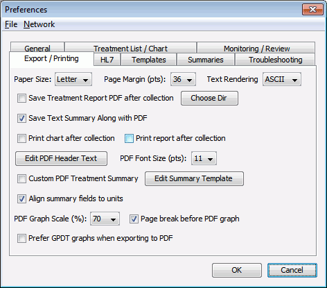

Customizing PDF Treatment Reports
Exporting and Printing Treatment Reports
GPD can export – individually, in batch, and automatically – PDF versions of the treatment printout, including the graph and the summary. It can also export treatment info (structured by the fields used) as a CSV file that you can import into Excel or other spreadsheets. Finally, graph traces can be exported in EDF format for further analysis.
The commands for manually exporting one or more treatments are found in the File→Export submenu in the Treatment List window.
The format of exported PDF treatment reports can be customized extensively using the options found on the Export/Printing tab in Preferences.

Paper Size and Margin, PDF Font Size
Determines the page format and text size of the generated PDF.
Text Rendering
If set to
ASCII, the text that appears in the PDF will be restricted to the ASCII character set. This may allow external programs to automatically process the summary information in the report. If set toVector, the text will be rendered as vector shapes, allowing for a full range of Unicode characters and fonts, but not recognizable as text by most PDF processing software.Save Treatment Report PDF after collection
If checked, a PDF report will be generated and saved automatically after a treatment is collected in the Monitoring screen. Use the
Choose Dirbutton to select the directory where these PDF files will be saved.Save Text Summary Along with PDF
If checked, when a PDF report is automatically generated, a text version of the summary will be saved alongside the PDF. This text version makes processing of the report easier with certain EMR software.
Print chart/report after collection
If checked, after each treatment collection, the treatment chart and/or report will be printed, respectively.
Edit PDF Header Text
By default at the top of generated PDFs is a simple summary line containing the patient's name. You can add a custom header that has access to the fields of the treatment, using the same
${VARIABLE}syntax as patient and treatment templates. For example,Report for ${PATIENT NAME}, ID: ${PATIENT ID} Treatment collection date: ${TREATMENT DATE}Custom PDF Treatment Summary / Edit Summary Template
Instead of the treatment summary as sent by the Thymatron, generated PDFs may have a custom summary. The summary template has access to the field values of the treatment info. An example:
Thymatron System IV S/N: ${Thymatron System IV S/N} Treatment Date: ${TREATMENT DATE} Program Selected: ${Program Selected} % Energy Set: ${% Energy Set} Charge Delivered: ${Charge Delivered} Current: ${Current} Stimulus Duration: ${Stimulus Duration} Frequency: ${Frequency} Pulse Width: ${Pulse Width} Static Impedance: ${Static Impedance} Dynamic Impedance: ${Dynamic Impedance} EEG Endpoint: ${EEG Endpoint} EMG Endpoint: ${EMG Endpoint} Base Heart Rate: ${Base Heart Rate} Peak Heart Rate: ${Peak Heart Rate} Average Seizure Energy Index: ${Average Seizure Energy Index} Postictal Suppression Index: ${Postictal Suppression Index} Maximum Sustained Power: ${Maximum Sustained Power} Maximum Sustained Coherence: ${Maximum Sustained Coherence} Early Ictal Amplitude: ${Early Ictal Amplitude} Midictal Amplitude: ${Midictal Amplitude} Post-Ictal Amplitude: ${Post-Ictal Amplitude}Align summary fields to units
If a custom summary is used as above, then for values that have units, for instance a
${Peak Heart Rate}of111 b/mor${Charge Delivered}of358.9 mC, the values will be aligned so that the units line up. In this case, these two lines would appear as so:Charge Delivered: 358.9 mC Peak Heart Rate: 111 b/mPDF Graph Scale (%) / Page break before PDF graph
You can set the size of the graphs in the PDF, as well as add a page break between the summary and graphs.
Prefer GPDT graphs when exporting to PDF
If on the
Monitoring/Collectionscreen you save the monitoring data (either manually using the menu itemCollection→Save Monitoring Data Nowor automatically ifAutosave Monitoring Datais checked), then along with theDATfile sent by the Thymatron, the treatment will have aGPDT-format monitoring data file associated with it. TheGPDTfile contains all data since collection was started, rather than just post-treatment as with theDAT.When exporting to PDF, you can use either both the
DATand theGPDTfiles to generate graphs, or only theGPDTfile. Check this option to use only theGPDT.